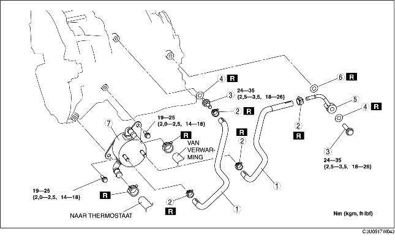

1. Verwijder het luchtkanaal en de accukap. (Zie VERWIJDEREN/PLAATSEN ACCU [LF].)
2. Neem de minkabel van de accu los.
3. Verwijder het desbetreffende deel van het luchtfilter. (Zie VERWIJDEREN/PLAATSEN LUCHTINLAATSYSTEEM [LF].)
4. Verwijder het onderpaneel.
5. Tap de koelvloeistof af. (Zie KOELVLOEISTOF VERVANGEN.)
6. Vang de ATF op in een geschikte bak. (Zie VERVERSEN AUTOMATISCHE-TRANSMISSIEVLOEISTOF.)
7. Neem de koelvloeistofslang los.
8. Verwijder de onderdelen in de aangegeven volgorde, zie de tabel.
9. Plaats de onderdelen in omgekeerde volgorde.
10. Vul koelvloeistof bij. (Zie KOELVLOEISTOF VERVANGEN.)
11. Controleer op koelvloeistoflekkage. (Zie CONTROLE OP KOELVLOEISTOFLEKKAGE.)
12. Vul ATF bij tot het aangegeven niveau. (Zie VERVERSEN AUTOMATISCHE-TRANSMISSIEVLOEISTOF.)
13. Controleer de olieleidingen en -slangen op lekkage.
14. Controleer de leidingen op koelvloeistoflekkage.
15. Controleer het niveau en de toestand van de ATF. (Zie CONTROLE AUTOMATISCHE TRANSMISSIEVLOEISTOF (ATF).)
16. Voer de lijndruktest uit. (Zie TESTEN MECHANISCH SYSTEEM.)

.
1. De oliekoeler van de automatische transmissie moet altijd doorgespoeld worden wanneer de transmissie voor onderhoud verwijderd wordt, aangezien de aanwezige vloeistof vervuild kan zijn; daardoor zou de nieuwe vloeistof ook vervuild kunnen raken.
2. Volg de aanwijzingen voor doorspoelen in het instructieboekje van de fabrikant.
1. Zet perslucht op de aansluiting aan de oliekoelerzijde en blaas al het vuil en de verontreinigingen uit de leidingen. Zet de perslucht er niet langer dan 1 minuut op.
2. Breng de merktekens in lijn en schuif de olieleiding op de leiding tot aan de aanslag, zoals in de afbeelding is aangegeven.
3. Plaats de nieuwe slangklem op de slang.
4. Controleer of de slangklem niet met andere onderdelen in aanraking komt.